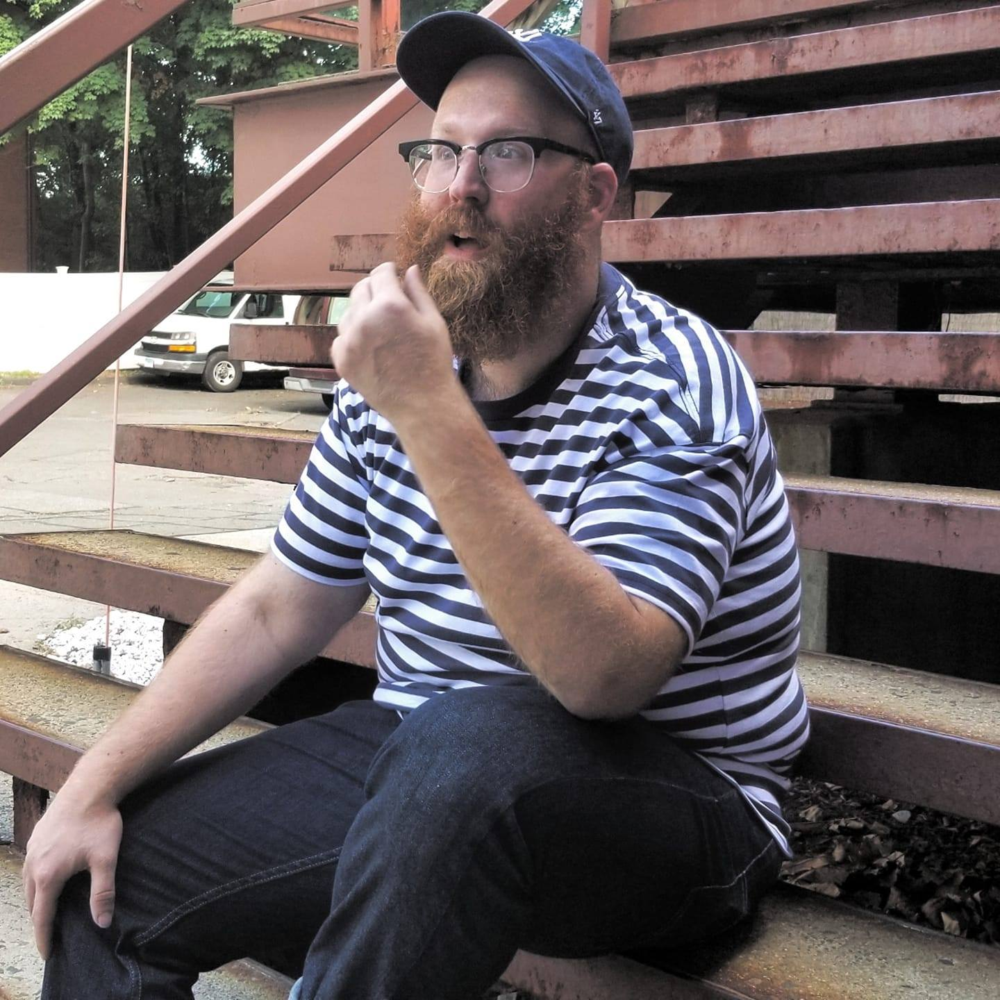
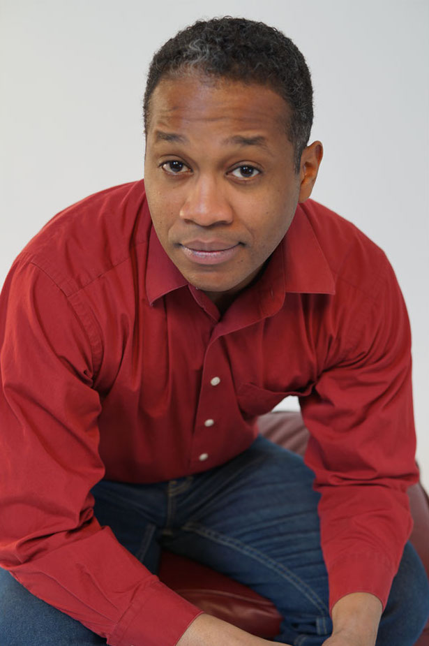

ABOUT THE ARTISTS
 Courtney Cooke (Voice Performer) is a theatre maker and educator based in Providence, RI with an MFA from the University of the Arts/Pig Iron Theatre. She enjoys a collaborative process and getting the chance to make something while stuck at home. She is a theatre educator interested in bringing theatre into every school, no matter their socioeconomic background. Her teaching work focuses on play-based learning, character creation, and improvised world-building. Outside of her theatre work, she alters and distresses clothing. As a young woman of the 90s, she spent many hours in the Providence Place Mall and will never forget getting her ears pierced at the Piercing Padoga, but would not do it again. Find out more about her at courtneyrosecooke.com
Courtney Cooke (Voice Performer) is a theatre maker and educator based in Providence, RI with an MFA from the University of the Arts/Pig Iron Theatre. She enjoys a collaborative process and getting the chance to make something while stuck at home. She is a theatre educator interested in bringing theatre into every school, no matter their socioeconomic background. Her teaching work focuses on play-based learning, character creation, and improvised world-building. Outside of her theatre work, she alters and distresses clothing. As a young woman of the 90s, she spent many hours in the Providence Place Mall and will never forget getting her ears pierced at the Piercing Padoga, but would not do it again. Find out more about her at courtneyrosecooke.com

Mike Durkin (Co-Creator) is a multidisciplinary social practice performance artist residing in New York City. Mike is guided by the intersection between art and the everyday. With his performance group, The Renegade Company he has created site-responsive social practice productions exploring food access, place, and gentrification. Most recently he developed a performance installation working with knitters, dancers, and musicians that assembled a live fiber art recreation of Henri Matisse’s Le Bonheur de Vivre at the Barnes Foundation in Philadelphia. He is currently in development to create a performance project focusing on the role sports plays in universities and communities, entitled, S-P-O-R-T-S-P-L-A-Y. Mike’s work has been presented at the Brandywine River Museum, Barnes Foundation, Mt. Moriah Cemetery, the Life Do Grow Farm, and in parks, churches, fields, along the streets in Kensington, and online. Mike is part of the 2017 MFA in Devised Performance class with Pig Iron Theatre Company/University of the Arts.
Dylan Gygax (Co-Creator) is a trained composer and pianist with a particular interest in electronic music and minimalist soundscapes. They are passionate about creating music for all forms of theater, no matter how experimental. They work with directors from initial planning stages to final mixing and mastering.
 Vanessa Ogbuehi (Voice Performer) is a Philadelphia-based artist making original, devised theatre. Her interdisciplinary work is a celebration of extraordinary people whose lessons of defiance have been forgotten. She most recently directed "The Bodice Ripper Project" for the Philly Fringe Festival 2020, a digital opera-cabaret with mezzo-soprano Maren Montalbano. Vanessa received her Graduate Certificate in Devised Performance from the Pig Iron School, and is currently working on new projects in film and VR.
Vanessa Ogbuehi (Voice Performer) is a Philadelphia-based artist making original, devised theatre. Her interdisciplinary work is a celebration of extraordinary people whose lessons of defiance have been forgotten. She most recently directed "The Bodice Ripper Project" for the Philly Fringe Festival 2020, a digital opera-cabaret with mezzo-soprano Maren Montalbano. Vanessa received her Graduate Certificate in Devised Performance from the Pig Iron School, and is currently working on new projects in film and VR.
 Logan Gabrielle Schulman (Co-Creator) [they/them] is a proud queer Jewish (visual + performance) artist, director, cultural educator, and activist. Their work unfolds as ritual collage, complicating commonplace configurations and liturgies of faith in America. Through performance, installation, and video, their practice weaves empathy, criticality, and rupturous deep-time into reflexive multimedia narratives. Logan is presently involved in directing new projects with the Sarasota Architectural Foundation (FL), the Marie Selby Botanical Garden (FL), Sarasota Contemporary Dance (FL), Urbanite Theatre (FL), and Maelstrom Collaborative Arts in Cleveland, OH. They have created work for DopoLavoro Teatrale (Toronto), the University of Pennsylvania (Phila), Enya Kalia Creations (NYC), The Renegade Company (NY & Phila), the Chautauqua Institution (NY), and Vox Populi Gallery (Phila), among others. They earned their Bachelors with Honors in Theater and Religion from New College of Florida. Their work has been supported in residencies and grants from the Andrew W. Mellon Foundation, the Florida Humanities Council, InterAct Theatre, Bread & Puppet Theater, the Chautauqua School of Art, the Stella Adler Studio, Headlong Dance Theater, Philadelphia Directors Gathering, and the Directors Lab North (Toronto) and the Directors Lab West (LA). Most recently, their play Make Thee an Ark, co-written with Raychel Ceciro, is featured on the 2020 Kilroys List.
Logan Gabrielle Schulman (Co-Creator) [they/them] is a proud queer Jewish (visual + performance) artist, director, cultural educator, and activist. Their work unfolds as ritual collage, complicating commonplace configurations and liturgies of faith in America. Through performance, installation, and video, their practice weaves empathy, criticality, and rupturous deep-time into reflexive multimedia narratives. Logan is presently involved in directing new projects with the Sarasota Architectural Foundation (FL), the Marie Selby Botanical Garden (FL), Sarasota Contemporary Dance (FL), Urbanite Theatre (FL), and Maelstrom Collaborative Arts in Cleveland, OH. They have created work for DopoLavoro Teatrale (Toronto), the University of Pennsylvania (Phila), Enya Kalia Creations (NYC), The Renegade Company (NY & Phila), the Chautauqua Institution (NY), and Vox Populi Gallery (Phila), among others. They earned their Bachelors with Honors in Theater and Religion from New College of Florida. Their work has been supported in residencies and grants from the Andrew W. Mellon Foundation, the Florida Humanities Council, InterAct Theatre, Bread & Puppet Theater, the Chautauqua School of Art, the Stella Adler Studio, Headlong Dance Theater, Philadelphia Directors Gathering, and the Directors Lab North (Toronto) and the Directors Lab West (LA). Most recently, their play Make Thee an Ark, co-written with Raychel Ceciro, is featured on the 2020 Kilroys List.

Steven A. Wright (Voice Performer) is an Actor/Director based in the Philadelphia area. As a director he has worked with such companies as Curio Theatre Company (The Mystery of Irma Vep) Theatre In the X (Beast of Nubia) EgoPo Classic Theatre ( A Human being Died That Night) Society Hill Playhouse (PVT. WARS, A Zoo Story) And from 2009-2011 was the director/producer for the sketch comedy group "The Insiders". As an Actor is has worked with such companies as Theatre Horizon (Frederick Douglas- The Agitators, Lovin' Al-Working), EgoPo Classic Theatre (Martin-Fool For Love, Jean Paul Marat- Marat/Sade, Charlie-Death of a Salesman, Paddy-The Hairy Ape) Azuka Theatre (Kenyatta- Sunset Baby, Bill- Laura's Bush, Al-T'was The Night, Father -Neighborhood 3) Quintessence Theatre Group (Lloyd-One Man Two Guvnors, Mr. Browning-Oliver!, Vanya-Uncle Vanya) 1812 Productions(This Is The Week That Is 1-5) Philadelphia Theatre Company (Cecil B. Moore-Rizzo) Wilma Theatre (Uncle- The Convert) Curio Theatre Company ( Othello-OTHELLO) Arden Theater Company (Eli-Gem Of the Ocean, Dr. Boekman- Hans Brinker and the Silver Skates, Dameon-Sidways Stories from Wayside School) Walnut Street Theater (Bob Cratchit- A Christmas Carol, George-SChool Hose Rock Jr., Raziel-AfterPlay)